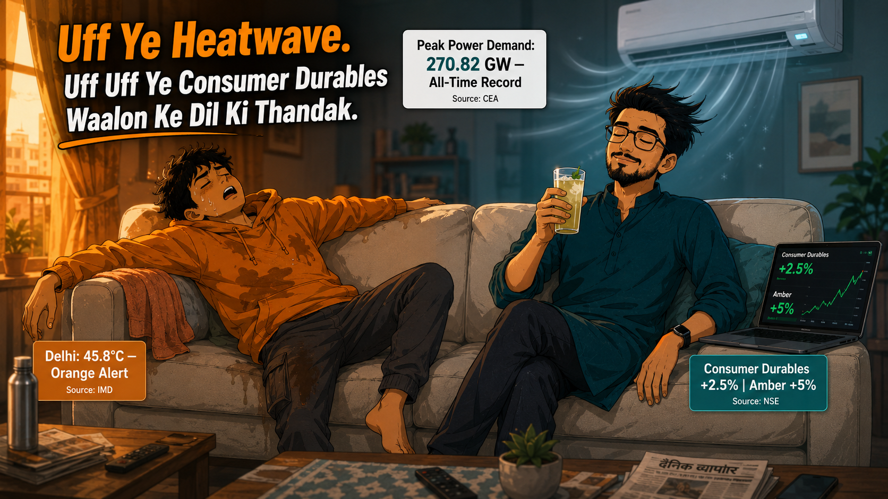

Home › Blog › Cause & Effect › India Heatwave 2026 & Consumer Durables Rally
How India's record-breaking heatwave of 2026 moved AC stocks +5%, Consumer Durables +2.5%, and power demand to 270 GW — and why the IMD forecast in March was the real signal, not the 46°C headline in May.
By Neo & Teo | TrendTurtles · 6 min read · Published: May 2026

India's May 2026 heatwave — with peak power demand hitting 270.82 GW and temperatures crossing 48°C — triggered a rally in Consumer Durables and power stocks. Amber Enterprises rose 33%, Blue Star +5%, Voltas +4%, Nifty Consumer Durables +2.5% in a single session. The real signal was the IMD seasonal forecast published in March 2026 — six weeks before the headline. The story follows Neo and Teo on the same sofa in the same heatwave — one behaal, one blissful — and breaks down three mistakes most retail investors made, plus three IF-THEN triggers for the next seasonal signal.
The ceiling fan had given up. It was still spinning, technically, but the air it pushed felt like it had come straight off a tandoor. Outside, Delhi was sitting at 45.8 degrees Celsius. The IMD had issued an orange alert for the next five days.
Teo was on the sofa. Stretched out, arms wide, one leg dangling over the side. His phone was somewhere in the cushions. His shirt was doing its best. There was a damp patch where his back met the fabric, and another where his neck met the headrest. He had stopped checking his portfolio twenty minutes ago. It had not improved his mood.
Neo was also on the sofa. Eyes closed. A glass of sharbat in his right hand, condensation running down the outside of the glass. The AC was pointed directly at him. His hair was moving slightly in the cold air. His laptop was open on the armrest beside him — screen facing up, green numbers quietly doing what green numbers do.
"Yaar — ab aur nahi," — Teo to the ceiling, to no one in particular, pressing a damp towel to his forehead.
Neo took a sip of sharbat. Did not open his eyes.
"Garmi ki baat kar raha hai ya portfolio ki?" — Neo to Teo, calm. Almost asleep.
Teo turned his head slowly. He looked at Neo. He looked at Neo's laptop screen. He looked back at the ceiling.
"Dono," — Teo to Neo. One word. Entirely accurate.
By the third week of May 2026, India had broken its own power demand record four consecutive days in a row. On Wednesday, May 20, peak power demand hit 265.44 GW. On Thursday, May 21, it crossed 270.82 GW — exactly matching the Ministry of Power's projection for the entire summer season, reached three weeks before June.
The temperatures driving this were not subtle. Banda district in Uttar Pradesh touched 48 degrees Celsius. Nagpur and Akola in Vidarbha crossed 46 degrees. Delhi logged 45.8 degrees on Wednesday with an orange alert running through the week. On Friday, May 22, every single entry in the global top-50 hottest cities list belonged to India. Not one exception.
The IMD had issued a severe heatwave warning covering eight states: Delhi, Rajasthan, Punjab, Haryana, Uttar Pradesh, Madhya Pradesh, Vidarbha, and Chhattisgarh. The minimum temperature in Delhi on May 21 settled at 31.9 degrees Celsius — the warmest May night in fourteen years, recorded at Safdarjung. That meant no relief after sunset.
India was, in a word, cooked.
And somewhere in this, the Nifty Consumer Durables Index had already moved 2.5% on a single session. AC manufacturers were up 3% to 5% in the same week. Power generation companies had climbed 2.7% to 16% since the start of the calendar year. The market had read this story before the headlines had.
Teo finally sat up. He found his phone in the cushions. He made the mistake of opening Kotak Neo .
"Bhai — AC wale stocks dekh. Blue Star , Voltas , Amber — sab upar hain. Abhi bhi loon kya?" — Teo to Neo, phone extended, squinting at the screen.
Neo opened one eye. Looked at the screen. Closed it again.
"IMD ne February mein bata diya tha. Tune AC kharida. Stock nahi." — Neo to Teo. Flat. Final.
"Matlab? February mein kya pata tha?"
"Above-normal heatwave days. East, Central, Northwest India. Public forecast tha. Free tha." — Neo to Teo, sip of sharbat. "Amber tab 6,000 pe tha. Aaj 8,000 ke paas hai."
Teo stared at his phone for a long moment.
"To ab? Abhi bhi nahi lena chahiye?"
"Garmi ka peak kab tha?" — Neo to Teo, one eyebrow up. The answer was obvious. It was this week.
The IMD released its summer forecast for April–June 2026 in late March. It specifically predicted above-normal heatwave days across East, Central, and Northwest India. This was public information — on the IMD website, in every financial newspaper.
Nifty Consumer Durables index started moving in April itself. By April 27, when the first major heatwave hit, Amber Enterprises was already up 5% in a single session. Power stocks had moved 2.7% to 16% between January and March 2026 — all before this week's peak temperatures.
The signal was the IMD forecast. Not the 46°C headline. Not the news alert. The forecast. Available free at mausam.imd.gov.in.
"Toh kya karoon main?"
"Data dekh, news nahi." — Neo to Teo, eyes still closed. "Monsoon ka forecast dekh ab."
Teo opened the IMD website for the first time in his life.
Were you watching the heat or the data this week? The three IF-THEN triggers in the section below are exactly where to start next time.
The IMD released its summer forecast for April–June 2026 in late March. It predicted above-normal heatwave days across East, Central, and Northwest India — specific regions, specific severity. This was the signal. Not the 46 degree temperature on the news. Not the orange alert. The forecast.
By the time every channel was running heatwave graphics this week, Amber Enterprises had already moved from roughly Rs 6,000 to Rs 8,000. Blue Star had run from Rs 1,600 levels to Rs 1,900. Power stocks — NTPC , Tata Power , JSW Energy — had posted 2.7% to 16% returns since January. The investors who benefited entered on the IMD forecast, not on the news alert. There is always a gap between the signal and the headline. That gap is where the returns live.
When every news channel shows AC companies and power stocks going up, retail investors feel the pull. It looks obvious. It looks safe — the reasoning is right there, visible, logical. But the visible, logical play is usually already priced in.
Amber Enterprises was trading at a P/E of over 124 this week. Voltas at over 78. These are not numbers that suggest the easy money is still on the table. The investors who bought in April on a weather forecast bought a less crowded, less expensive position. Buying in May on a news headline means buying someone else's profit.
Neo's last line was not about heatwave stocks. It was about the monsoon forecast. The IMD's long-range forecast for the 2026 Southwest Monsoon had already been published. A good monsoon means cooling demand eases, power demand normalises, and the same AC and power stocks that ran this summer could face headwinds in Q2.
Retail investors who buy Consumer Durables and power stocks at peak-summer valuations, without reading the next seasonal signal, are setting themselves up for the same mistake in reverse. The data that told you to buy in April is the same data that tells you when to think about exiting. It is always available. Most people just stop reading after the first trade.
Teo had the IMD website open. He was reading the long-range monsoon forecast for 2026.
"Above-normal rainfall expected. July–September."
He looked at Neo.
"Matlab AC stocks July tak hi hain?"
"Consumer staples dekh. FMCG Index . Monsoon mein kya bikta hai?" — Neo to Teo, finishing his sharbat. "Wahi agla signal hai."
Teo started a new watchlist. He called it: 'Monsoon.'
Neo closed his laptop. The screen went dark — the green numbers disappearing quietly.
"Data dekh, news nahi."
Everyone felt the heat this week. Not everyone looked at the other side of it. The monsoon forecast already has the next answer.
IF: IMD publishes its April–June seasonal outlook predicting above-normal heatwave days for Central, Northwest, or East India. This is typically released in late March. Market has not yet reacted. Consumer Durables index is flat or slightly down.
THEN: Staggered entry into Nifty Consumer Durables ETF (NSE: CONSUMBEES) or individual AC manufacturers — Voltas (NSE: VOLTAS), Blue Star (NSE: BLUESTARCO), Amber Enterprises (NSE: AMBER). Spread across 2–3 sessions in early April, before peak summer demand is visible in earnings.
SOURCE: IMD Seasonal Outlook — mausam.imd.gov.in, published free every March for the April–June season. NSE Consumer Durables Index for relative movement tracking.
AVOID: Do not enter after the first major heatwave headline — by then, stocks have already moved 15–30%. The signal is the forecast, not the temperature reading.
IF: Power Ministry data shows peak power demand crossing previous all-time high. This data is published daily on the Power Ministry's official X account and website. Thermal power companies are showing high plant load factors.
THEN: Power sector ETFs or individual names with strong fundamentals — Tata Power (NSE: TATAPOWER), JSW Energy (NSE: JSWENERGY), Torrent Power (NSE: TORNTPOWER). Check P/E relative to sector average before entering. Avoid companies with regulatory concerns regardless of demand tailwinds.
SOURCE: Power Ministry daily data — pib.gov.in or @MinOfPower on X. NSE Power Index for sector-level tracking. Business Standard markets section for analyst commentary.
AVOID: Do not buy Reliance Power or any power company under active SEBI scrutiny simply because the sector is up. Demand tailwinds do not fix balance sheet problems.
IF: IMD long-range monsoon forecast for July–September is published, predicting above-normal rainfall. Consumer Durables and power stocks are near 52-week highs after a strong summer run.
THEN: Begin rotating into FMCG — specifically beverage and rural consumption names that benefit from good monsoon and agricultural income. Varun Beverages (NSE: VBL), Tata Consumer (NSE: TATACONSUM), Dabur India (NSE: DABUR). Also watch rural-focused NBFCs and two-wheeler companies. Consider partial profit booking in Consumer Durables if P/E is above 80.
SOURCE: IMD Long-Range Forecast — imd.gov.in, published April/May for the monsoon season. NSE FMCG Index for entry timing reference.
AVOID: Do not hold peak-summer Consumer Durables positions into Q2 without checking the monsoon signal. The same logic that worked on the way up reverses when cooling demand normalises.
The heatwave is not going anywhere this week. IMD has extended the severe heatwave warning through May 27 across Northwest, Central, and East India. Peak power demand is still setting records. The Consumer Durables rally still has some heat left in it — but the easy move, the one priced at IMD-forecast levels, is already done.
Teo made a new watchlist. That is more than most retail investors do in a season where the only response to a heatwave is to complain about the AC bill.
Neo finished his sharbat. Put the glass down. Opened his laptop again.
The monsoon forecast was looking interesting.
"Data dekh, news nahi."
Know someone who was sweating this week — and not just because of the temperature? Tag them or send this across — LinkedIn, Facebook, Instagram, YouTube.
1. The signal was the IMD forecast, not the temperature. March 2026 seasonal outlook predicted above-normal heatwave days — six weeks before the 46°C headline.
2. By May, the easy move was already done. Amber at P/E 124, Voltas at P/E 78 — the April entry was the right entry, not the May one.
3. The next signal is the monsoon forecast. Above-normal rainfall July–September means Consumer Durables headwinds in Q2. Rotate toward FMCG before the crowd does.
4. Every season has a signal — before the headline. IMD publishes forecasts free. Most retail investors read the news instead.
How Operation Sindoor Triggered a Defence Stock Rally — Nifty Defence +32%, MTAR +337%
How the Trump-Xi Beijing Summit Moved Indian Markets — Sensex +789, Pharma vs IT Rotation
How Rising Crude Oil Price Impacts Your Portfolio — A Dialogue at the Petrol Pump
These articles give you the framework — so the next time a seasonal signal appears, you already know what to watch.
Stock Double, Goa Ka Trip and FOMO — How Fear of Missing Out Destroys Portfolios
Why Retail Investors Lose Money — Three Behavioural Patterns As Per SEBI
Why Markets Move Before the News — Market Sab Jaanta Hai